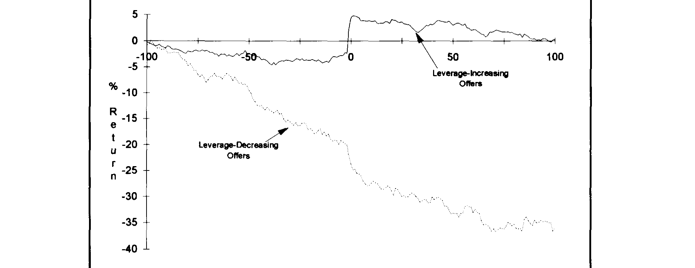
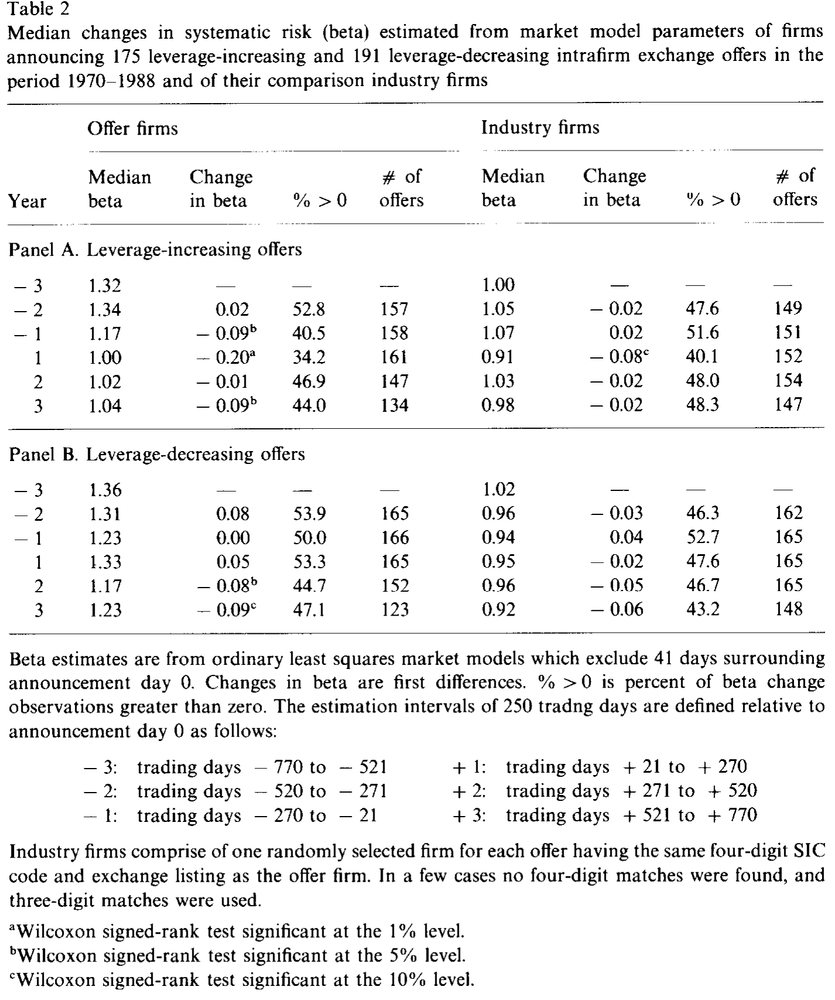
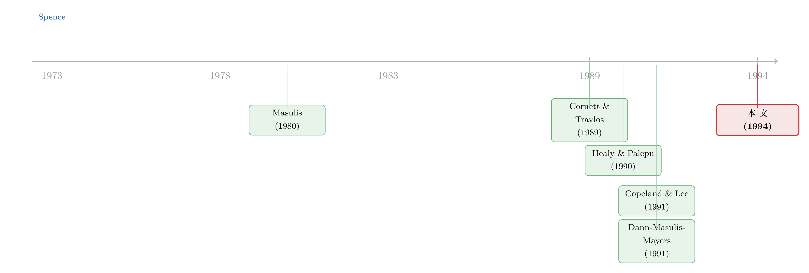

镜子碎了：当「加杠杆」和「去杠杆」说的根本不是同一件事
本文读的是 Shah (1994, Journal of Financial Economics)：用 175 起增杠杆、191 起减杠杆的「公司内换券要约」（intrafirm exchange offer）做样本，作者发现这两类交易传递的信息在性质上不同——增杠杆要约让投资者下调了对股票风险的判断，却没改变对现金流的预期；减杠杆要约让投资者下调了对现金流的预期，却没改变对风险的判断。它们不是同一组经济变量上方向相反的两个信号，而是分别照向了两件事。
1 一面被默认的镜子
先想象一家公司只做一件事：把一批旧债券换成新股票，或者反过来，把一批旧股票换成新债券。它的厂房、机器、订单、客户，一样都没动。换句话说，这是一次几乎「纯粹」的资本结构变动（pure capital structure change）——资产那一边纹丝不动，只有负债和权益的比例被重新拨了一下。
可就是这么一拨，股价会猛地一跳。增杠杆的要约一公布，股票应声上涨；减杠杆的要约一公布，股票应声下跌。资产没变，价格却变了，于是几十年来公司金融领域几乎众口一词地说：这是信息效应（information effect）——管理层通过改变资本结构，向市场透露了某些它原本不知道的东西。
到这里都没有争议。真正被「默认」下来、却从没被认真盘问过的，是下面这句话：
增杠杆要约传递的信息，和减杠杆要约传递的信息，是内容相似、方向相反的。
这句话听上去太自然了——加杠杆是好消息，减杠杆是坏消息，一正一负，像照镜子，左右翻转而已。早期文献甚至会把减杠杆要约的财富效应翻个符号，直接和增杠杆要约放在一起回归（Masulis, 1980 就这么干过）。隐含的假设是：这两类交易，除了杠杆变动的方向，其它方面统统一样。
Shah (1994) 这篇论文，干的就是一件事——把这面镜子打碎。他要追问的是：如果你不去看符号，而是去看股价背后到底是哪个经济变量在动，增杠杆和减杠杆说的，真是同一件事的正反两面吗？
一句话提前剧透：不是。增杠杆的故事是「风险下降」，减杠杆的故事是「现金流变差」。两个故事各说各的，几乎不重叠。这就是全文的核心反转。
2 识别策略：为什么偏偏挑「换券要约」
要回答「股价里动的是哪个变量」，第一步是找一个能把「资本结构」和「真实资产」干净地分开的实验场。
这正是换券要约的妙处，也是 Masulis (1978) 最早点破的洞见：公司内的换券要约近似是纯资本结构变动，它既不像增发新股那样往公司里灌现金，也不像分红回购那样从公司里抽现金。资产规模基本不动，动的只有资本结构本身。如果你想研究「光改变杠杆」会泄露什么信息，没有比它更接近教科书理想实验的设定了。
接着，一个自然的问题是：怎么判断「投资者改变了对风险的判断」还是「改变了对现金流的判断」？Shah 的做法是把要约公司放到它同行业的对照组里去称重。具体来说：
- 用四位数 SIC 码匹配出同行业的全部其它公司，算出它们某个财务指标（按销售额标准化后）的行业中位数；
- 要约公司的指标减去这个行业中位数，得到一个行业调整后的「异常」水平。
以现金流为例，论文定义了两个不受杠杆「机械效应」（利息、税）污染的口径。第一个是经营性现金流（operating cash flow，Compustat 数据项 A13 = 销售 − 销货成本 − 销管费用），第二个是扣除投资支出后的现金流（A13 − A128 + A107）。两者都按当年销售额标准化。于是，「异常现金流」可以写成：
$$ \text{AbnCF}_{i,t} \;=\; \frac{CF_{i,t}}{Sales_{i,t}} \;-\; \operatorname{median}_{\,j \in \text{ind}(i)} \frac{CF_{j,t}}{Sales_{j,t}} $$
这里的关键在于：用「水平」而不是只用「变化」。作者特意强调，如果只看现金流的逐年变化（很多研究就是这么做的），当一家公司常年低于行业、又一直「躺平」式地低着的时候，你会因为「没有变化」而错误地接受「没有异常」的零假设——这是一类典型的第二类错误（Type II error）。所以他既报告行业调整后的水平，也报告相对于要约前一年（year −1）的变化，两者一起看。
风险这一边的衡量同样直接：用市场模型（market model）的 OLS 斜率，即股票的 beta，连续复利、等权市场指数。作者用要约前后六段互不重叠、每段 250 个交易日的区间（剔除公告前后 41 天），构造出五个「逐年」的 beta 变化（两段事前、一段事件期、两段事后）。风险不需要做行业调整，因为对照公司的预期 beta 变化本就是零。这里还埋了一个伏笔：按 Hamada (1972) 的逻辑，杠杆的提议变动所「机械」带来的 beta 变化，方向是和公告期的正收益对不上的——也就是说，如果增杠杆真的伴随风险下降，那一定不是杠杆本身的代数效应，而是关于资产风险的新信息。
处理组与对照组：处理组是发起换券要约的公司；对照组是同行业、同交易所上市的其它公司（算风险变化时，还专门抽了一个同 SIC 码、同上市地的随机样本做参照）。
3 数据
样本是 1970–1988 年间的 175 起增杠杆要约和 191 起减杠杆要约。增杠杆要约里多数是「拿债换股」（发债、赎回普通股），减杠杆要约里多数是「拿股换债」（发股、赎回债务）。财务数据来自 Compustat（主文件、OTC 文件、研究文件分别对应匹配，部分地控制了规模与幸存者偏差），股价数据用的是 NYSE/AMEX 或 OTC 的等权指数。观测单位是「公司—财年」，围绕公告年（year 0）展开一个九年窗口（year −4 到 year +4）。
4 主要结果：从「符号不对称」到「内容不对称」
4.1 第一层不对称：连符号和幅度都不对称
先看股价。作者把公告前后 200 个交易日的累计市场调整收益画了出来（如图 1）。光是这张图，就已经动摇了「镜子」假设。

Figure 1: Average cumulative market-adjusted returns over 200 trading days surrounding announce-
增杠杆的那条线：公告之前，从第 −100 天到第 −20 天，平均累计市场调整收益是 −3.9%、中位数 −4.6%，都在 1% 水平显著——也就是说，增杠杆公司在公告前是轻微跑输市场的。公告把这个趋势一举逆转：两日（−1 到 0）公告异常收益 +6.9%，五日（−2 到 +2）+7.9%，都在 1% 水平显著。而且公告收益和事前的累计跑输是负相关的（5% 显著）——跌得越多，反弹越大。
减杠杆那条线则触目惊心。公告前从 −100 到 −20 天，平均累计收益 −17.8%、中位数 −8.0%，p 值近乎为零——这些公司在公告前已经被市场狠狠抛弃了，而且公告之后这个下跌趋势还在继续。公告本身又是一记补刀：两日 −2.9%，五日 −3.9%，同样 1% 显著。
请注意这里的不对称：增杠杆 +6.9% 对减杠杆 −2.9%，方向相反，幅度也相差悬殊。如果它们真是一面镜子的两侧，幅度不该差这么多。镜子上第一道裂纹，就出现在这里。
一个有意思的对照：减杠杆公司在公告前已经大跌，这和增发新股「通常发生在股价上涨之后」（Asquith & Mullins, 1986；Lucas & McDonald, 1990）正好相反。同样是「往公司里放股票」，换券要约里的减杠杆，更像是困境中的被迫之举。
4.2 第二层不对称：股价背后动的是不同的变量
接着，一个自然的问题是：股价动了，可它背后到底是「现金流预期」在动，还是「风险预期」在动？这才是论文真正的引擎。
先看现金流。 对增杠杆要约，结论近乎一句「什么都没发生」：无论是行业调整后的经营性现金流水平，还是相对 year −1 的变化，在每一年都贴近于零，统计上不显著。也就是说，增杠杆公司的盈利能力，和同行没有差别，公告也没有预示盈利改善。这一点直接顶撞了早前文献的判断——Cornett & Travlos (1989)、Copeland & Lee (1991) 都倾向于认为增杠杆传递的是「盈利向好」的利好。Shah 说：至少在经营现金流上，看不到。
减杠杆这边则完全是另一幅图景。减杠杆公司的经营性现金流，在所有事前年份都比同行业中位数低 3 到 6 美分（每一美元销售额），事后依旧偏低；未调整口径下事后只有 8 到 9 美分，意味着中位公司比同行低了超过 33%。这是一段漫长的、持续的经营疲弱，与那条一路向下的累计股价曲线严丝合缝。而扣除投资支出后的现金流之所以在事后「看起来改善」，主要靠的是砍资本开支、加速变卖厂房设备——不是生意变好了，是开始勒裤腰带了。
再看风险（beta）。 这里的对比把整个故事钉死了（如表 2）。增杠杆要约伴随着股票系统性风险（beta）的显著下降；减杠杆要约则看不到 beta 的明显变化。

Table 2
把两张表叠在一起，核心结论就浮出水面了：
- 增杠杆：beta ↓，现金流 ——（不变）。投资者下调的是风险。
- 减杠杆：现金流 ↓，beta ——（不变）。投资者下调的是现金流。
这就是全文的中心。它们根本不是同一组变量上的正负两面，而是各自照向了不同的经济量。 没有任何一个现成的理论预言，杠杆变动的方向会泄露出性质不同的信息——这正是 Shah 觉得「surprising」的地方，也是这篇论文最硬的贡献。
4.3 第三层不对称：杠杆、资本开支、股利，处处都不对称
但真正关键的一步，是 Shah 没有就此打住，而是顺着「这两类公司本就是不同物种」这条线，继续挖出了更多旁证。
杠杆的路径就很不一样。两类公司在要约前都比同行更高杠杆；但减杠杆公司尤甚——它们在事前几年里杠杆一路攀升，到要约前夕已是同行平均的两倍多。要约之后，增杠杆公司离行业均值越走越远，但增幅小、且短暂；减杠杆公司则朝行业均值靠拢，且减得又大又持久。
资本开支上，增杠杆公司九年里和同行没差别——这点很重要：它说明 beta 的下降不是靠「资产替换」（卖掉风险资产、换成安全资产）实现的。那风险为什么会降？作者给出的解释是：投资者重新评估了公司资产的风险，很可能是因为管理层放弃了那些高风险、会损耗价值的投资机会（forgo risky, dissipative projects）——但他坦承，风险信息究竟通过哪条渠道传出来的，仍未解释清楚。
股利则再一次印证：增杠杆公司在每股股利、股利变化、是否派息的比例上，统统和同行无显著差别；减杠杆公司则显著不同——多数不派息、更多人在减、更少人在增，而且这种差距在要约后还进一步拉大。
一句话：从现金流到风险，从杠杆到资本开支再到股利，所有维度上都是不对称的。这不是巧合，而是「两类要约本就是两类公司、两个故事」的层层印证。
5 反转之后还要堵一个漏洞：是不是「公司控制权」在捣鬼？
到这里，一个机敏的读者会立刻反问：换券要约常常和敌意收购、反收购、财务困境搅在一起。会不会你看到的「不对称」，其实是公司控制权事件或违约带来的，跟资本结构本身没关系？
Shah 专门处理了这个内生性担忧。结论是：多数要约在很长一段时间内（事前事后）都和控制权事件无关；当他只看那些没有任何控制权事件的子样本时，结果和全样本几乎一样。已知的财务困境则集中在减杠杆公司的一个子集里——这些公司经营现金流和其它减杠杆公司差不多，但事前杠杆更高、事后在杠杆、资本开支、股利上砍得更狠（顺带一提，减杠杆样本里有 23% 在要约后第四年被交易所摘牌，困境子集更高达 38%，而同行只有 5%–8%，这也提示后期的现金流「改善」里有一部分是幸存者偏差撑起来的）。但由于这些子样本的定性表现和总样本一致，作者据此判断：信息内容的不对称，不是由控制权活动或违约解释的。
这一步堵漏，让前面的反转站得更稳。
6 文献脉络
这条研究的起点，是 Spence (1973) 的求职市场信号理论——几乎所有「资本结构事件泄露公司价值信息」的模型，根子都扎在这里。

把信号理论搬到换券要约这个干净实验场上的，是 Masulis (1978, 1980, 1983)：他第一个意识到换券要约是研究「不伴随资产变动的杠杆变化」的绝佳窗口，并记录了它的财富效应。但早期这批研究（还包括 McConnell & Schlarbaum, 1981；Pinegar & Lease, 1986）的注意力几乎都在证券持有人的公告财富效应上，没人去追问增杠杆与减杠杆背后信息性质是否相同——恰恰相反，Masulis (1980) 还把减杠杆的财富变化翻了符号，和增杠杆放在一起分析，等于默认了「镜子」假设。
到了 Cornett & Travlos (1989) 和 Copeland & Lee (1991)，研究开始转向盈利行为。但他们盯着的是每股收益（EPS），而 EPS 会被利息、税这些杠杆的机械效应污染。Cornett & Travlos 发现公告收益与意外 EPS 的关系，在减杠杆样本里稳定、在增杠杆样本里却不强（这一点和 Shah 的发现是相通的），但他们没报告意外 EPS 的幅度，也没看风险。Copeland & Lee 同时看了盈利和风险，却得出「增减杠杆传递的是内容相反的信息」——也就是仍守着镜子假设。
与此并行的，是回购与增发文献里那场关于「盈利与风险」的拉锯。Dann, Masulis & Mayers (1991) 和 Hertzel & Jain (1991) 在要约回购里找到了「盈利改善、风险下降」的证据；而 Healy & Palepu (1990) 在增发普通股后没有发现盈利变差（却发现风险上升），Jain (1989) 则发现分析师在增发前后下调了盈利预期——同一类事件，证据彼此打架。
Shah (1994) 正落在这个「一团乱麻」的交汇点上。他的贡献不是再添一个符号，而是把现金流和风险拆开、各自和行业对照，从而第一次清晰地指出：增杠杆和减杠杆不是镜像，而是分别在风险和现金流两个不同维度上说话。（关于困境中的换券要约这条支线，可参见《说好了「保护股东」，怎么反手把股价绞死了？》；关于资本结构选择的信息含量，亦可对照《啄食顺序理论的滑铁卢》。）
7 评论与延伸（Q&A + 研究方向）
(a) 几个可能的疑问
Q：换券要约真的是「纯」资本结构变动吗？会不会暗中也搬动了资产？
近似是，但不完美。要约本身不直接增减公司现金，资产规模也基本不动，这是它优于增发/回购的地方。Shah 也用资本开支做了佐证：增杠杆公司的资本开支与同行无异，说明 beta 下降不是靠资产替换。但减杠杆公司事后确实在砍资本开支、卖设备，所以对减杠杆样本而言，「纯粹性」要打个折扣——它更像困境调整的一部分。
Q：beta 下降会不会只是杠杆变化的代数后果（Hamada 效应），而非新信息？
作者明确排除了这一点。按 Hamada (1972)，提议的杠杆变动所机械带来的 beta 变化，方向与公告期的正收益是对不上的。换句话说，如果纯看杠杆的代数效应，增杠杆本该抬高股票 beta；可数据是 beta 下降并伴随股价上涨，所以这只能是关于资产风险的新信息，而不是杠杆的机械账。
Q：减杠杆公司事后现金流「看起来改善」，是不是说减杠杆其实是好事？
要小心。改善主要出现在「扣除投资支出后的现金流」上，而它来自砍资本开支和变卖设备，不是经营变好——经营性现金流始终低于同行。再叠加幸存者偏差（事后第四年 23%–38% 被摘牌，活下来的样本天然偏好），后期的「改善」很可能被高估。整体看，减杠杆标记的是一段持续疲弱期的开始，而非转折。
Q：为什么说增杠杆「更让市场意外」，减杠杆「在意料之中」？
因为 Shah 检视的所有事前业绩指标里，没有任何东西能预示增杠杆的到来——盈利正常、风险正常、股利正常，所以公告才会带来
+6.9%的大跳。减杠杆公司则早已高杠杆、低现金流、股价大跌，投资者对它要发股减债不会太惊讶，信息也是在更宽的时间窗里被慢慢消化的，所以公告冲击相对小（−2.9%）。
Q：这篇和 Copeland & Lee (1991) 到底分歧在哪？
数据上其实有相通之处（比如平均 beta 变化的幅度差不多）。分歧在解读：Copeland & Lee 守着「增减杠杆传递相反信息」的镜子假设；Shah 则把现金流与风险分开度量，发现增杠杆只在风险上说话、减杠杆只在现金流上说话——是性质不同，不是符号相反。把变量拆开，是这篇论文的方法论关键。
Q：控制权和违约真的能被排除干净吗？
作者做了该做的：剔除控制权事件后的子样本结果与全样本一致，已知困境只集中在减杠杆的一个子集。这让「不对称由控制权/违约驱动」的解释站不住。但这是观察性的排除，不是随机实验，仍无法排除某些未观测的、同时影响「选择哪类要约」和「业绩」的因素——这是所有这类事件研究的共同软肋。
(b) 几个可能的研究问题与提案
1. 把这套「拆变量」的逻辑搬到公司债与信用利差上。 【经济故事】Shah 拆的是股票的现金流预期与 beta。一个自然的延伸是：增/减杠杆要约公布时，债券价格怎么动？如果增杠杆真的只降资产风险、不改现金流，那对债权人未必是利空（风险下降利好债，杠杆上升利空债，净效应是经验问题）。把股、债两边的反应放在一起，能更干净地分离「现金流信息」与「风险信息」。【可行性】中。需要 TRACE 之前年代的债券价格（1970–1988 难找），现代样本可用 TRACE + Mergent FISD 重做，识别靠事件研究，doable 但样本期受限。
2. 外资持有人对「风险信号」和「现金流信号」的反应是否不同？ 【经济故事】如果增杠杆传的是风险信息、减杠杆传的是现金流信息，那么对风险更敏感的投资者群体（如受监管约束的外资机构）在两类事件中的调仓行为应当不对称。这能把「信息性质」从价格层面推进到持有人层面。【可行性】中。需要 13F/国际持仓数据匹配换券要约事件，识别靠持仓变化的横截面，难点是换券要约样本量小、外资持仓颗粒度粗。
3. 用现代高频数据重估「信息消化速度」的不对称。 【经济故事】Shah 已观察到减杠杆信息「在更宽的时间窗里被吸收」。增杠杆是公告日骤跳、减杠杆是缓慢渗透——这本身就是一种关于意外程度的可检验含义。用日内数据可以精确量出两类事件的价格发现速度差异。【可行性】高。事件研究 + 日内 TAQ 数据，方法成熟，唯一约束是现代换券要约更少见，可能要扩到广义的债股互换/定向回购。
4. 「放弃高风险项目」这条风险渠道，能否被直接证据坐实？ 【经济故事】Shah 把增杠杆的风险下降归因于「管理层放弃高风险、损耗价值的项目」，但自承渠道未被直接观测。可用专利/研发/并购/资本配置的项目级数据，检验增杠杆公司事后是否真的收缩了高方差投资。【可行性】中。需要项目层面的风险代理（如研发波动、行业风险敞口），识别仍是观察性的，但能为「风险渠道」提供比 beta 更接近机制的证据。
5. 资本结构政策的「同行传染」是否也分现金流型与风险型？ 【经济故事】既然增/减杠杆传递不同性质的信息，那么同行公司在观察到一家公司的换券要约后，是否会因「现金流信号」和「风险信号」而做出不同的政策反应？这把单公司的信息效应推广到行业均衡。【可行性】中。可借鉴《同行不是均匀的一团》的网络刻画，数据用 Compustat 行业面板，识别难点在于区分「学习对方信息」与「共同冲击」。
8 我的判断
贡献。 这篇论文最值钱的，不是某一个系数，而是一个方法论上的拒绝——拒绝把减杠杆当成增杠杆的镜像。通过把「现金流预期」和「系统性风险」拆成两个独立度量、再各自对照行业，Shah 让一个被默认了二十年的假设第一次被证伪：增杠杆讲的是风险的故事，减杠杆讲的是现金流的故事。+6.9% 对 −2.9% 的幅度不对称、beta 降 vs 现金流降的内容不对称、再加上杠杆/资本开支/股利的层层旁证，构成了一条相当完整的证据链。对今天的研究者，它的提醒依然成立：当你用一个符号去概括一类公司行为时，先问问这个符号背后是不是同一个变量。
对识别的担忧。 三点。其一，所有结论都建立在观察性的行业对照上，换券要约是公司自选的（self-selected），「选择做哪类要约」很可能和未观测的业绩前景相关，这一内生性无法靠子样本切分彻底洗掉。其二，减杠杆样本的幸存者偏差不容小觑（事后摘牌率高达 23%–38%），后期现金流的「改善」有多少是真改善、多少是死人不说话，值得存疑。其三，风险只用了市场模型 beta 这一个口径；beta 下降究竟来自资产风险、财务风险还是估计噪声，论文自己也承认渠道未明。
后续想看到什么。 我最想看到的，是把这套「拆变量」的框架接到债券市场上去——股票端已经告诉我们增杠杆降的是风险、减杠杆降的是现金流，那债权人这一侧的价格反应，本应是检验「信息性质」最干净的第二块拼图。在 TRACE 时代，这件三十年前受限于数据而做不成的事，今天是 doable 的。其次，我想看到对「管理层放弃高风险项目」这条风险渠道的直接证据，而不止是 beta 上的间接推断。镜子已经被这篇论文打碎了；下一步，是把碎片背后的机制一片片拼回去。
参考文献
Asquith, P., & Mullins, D. W. (1986). Equity issues and offering dilution. Journal of Financial Economics 15, 61–89.
Copeland, T., & Lee, W. H. (1991). Exchange-offers and swaps: New evidence. Financial Management 20, 34–48.
Cornett, M., & Travlos, N. (1989). Information effects associated with debt-for-equity and equity-for-debt exchange offers. Journal of Finance 44, 451–468.
Dann, L., Masulis, R., & Mayers, D. (1991). Repurchase tender offers and earnings information. Journal of Accounting and Economics 14, 217–251.
Hamada, R. S. (1972). The effects of the firm's capital structure on the systematic risk of common stocks. Journal of Finance 27, 435–452.
Harris, M., & Raviv, A. (1991). The theory of capital structure. Journal of Finance 46, 297–355.
Healy, P., & Palepu, K. (1990). Earnings and risk changes surrounding primary stock offers. Journal of Accounting Research 28, 25–48.
Hertzel, M., & Jain, P. C. (1991). Earnings and risk changes around stock repurchase tender offers. Journal of Accounting and Economics 14, 253–274.
Lucas, D., & McDonald, R. (1990). Equity issues and stock-price dynamics. Journal of Finance 45, 1019–1043.
Masulis, R. (1980). The effects of capital structure change on security prices: A study of exchange offers. Journal of Financial Economics 8, 139–178.
Masulis, R. (1983). The impact of capital structure change on firm value: Some estimates. Journal of Finance 38, 107–126.
McConnell, J. J., & Schlarbaum, G. G. (1981). Evidence on the impact of exchange offers on security prices: The case of income bonds. Journal of Business 54, 65–85.
Mikkelson, W., & Partch, M. M. (1988). Withdrawn security offerings. Journal of Financial and Quantitative Analysis 23, 119–134.
Pinegar, M. J., & Lease, R. C. (1986). The impact of preferred-for-common exchange offers on firm value. Journal of Finance 41, 795–814.
Shah, K. (1994). The nature of information conveyed by pure capital structure changes. Journal of Financial Economics 36, 89–126.
Spence, M. (1973). Job market signaling. Quarterly Journal of Economics 88, 355–379.